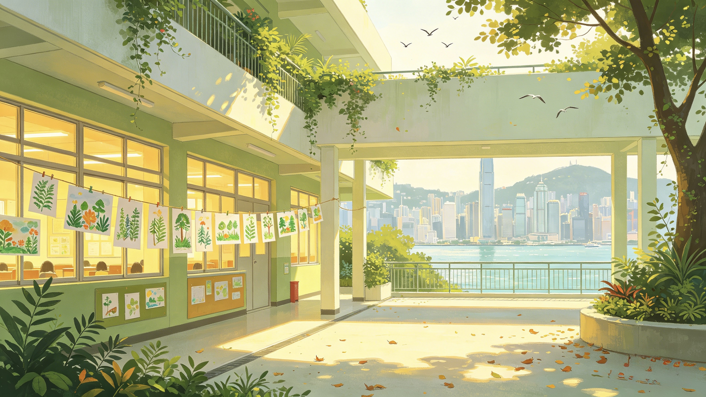

Searchable archive
Centralized school records with official website links and available motto/song content.
Hong Kong School Songs and Mottos Project
本網站整理香港中小學的校歌、校訓、學校基本資料與相關研究成果，支援學校文化、教育史與社區記憶的查閱、保存及討論。
A bilingual project portal for exploring Hong Kong primary and secondary school songs, mottos, school profiles, and related research outputs.
Explore the Project
Choose a project area below. The school database remains searchable, while reports, publications, and videos can be expanded with external links.
Search by Chinese or English school name, school level, school type, district, and school net.
Search schools ReportCollect project reports, progress summaries, and downloadable research materials.
View reports PublicationsLink journal articles, conference papers, book chapters, and other scholarly outputs.
Read publications VideosEmbed seminar report videos and presentation recordings through stable external links.
Watch videosProject Summary
校歌與校訓承載學校歷史、教育理想與社群身份。本項目以可搜尋的方式整理資料，方便教師、學生、研究者及公眾查閱香港中小學相關文本與連結。
Centralized school records with official website links and available motto/song content.
Dedicated pages for reports, publications, and seminar videos as the project develops.
A shareable website for collecting feedback and discussing the project with collaborators.
